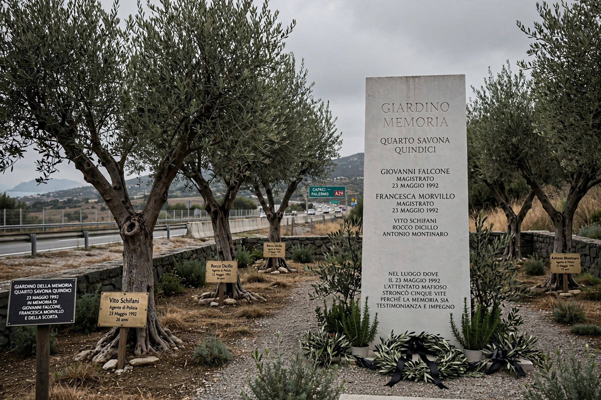

The Capaci bombing (Italian: Strage di Capaci) was a terrorist attack by the Sicilian Mafia that took place on 23 May 1992 on the A29 motorway near Capaci, Sicily. A bomb of some 400-500 kg of explosives, hidden in a drainage tunnel beneath the motorway, was detonated as the convoy of antimafia judge Giovanni Falcone passed, killing Falcone, his wife Francesca Morvillo, and three police escort officers - Vito Schifani, Rocco Dicillo and Antonio Montinaro. The attack, ordered by Mafia boss Salvatore Riina, was retaliation for the Maxi Trial convictions and shocked Italy, provoking a major state crackdown on Cosa Nostra.

The A29 motorway near Capaci, site of the bombing.
| Capaci bombing | |
| Date | 23 May 1992, c. 17:58 |
|---|---|
| Location | A29 motorway near Capaci, Sicily, Italy |
| Target | Judge Giovanni Falcone |
| Perpetrators | Sicilian Mafia (ordered by Salvatore "Toto" Riina; detonated by Giovanni Brusca) |
| Deaths | 5 |
| Aftermath | Operation Vespri Siciliani; arrest of Riina (1993) |
Falcone, director of criminal affairs at the Ministry of Justice, was travelling from Rome to Palermo. The explosive charge, packed into barrels in a culvert under the motorway near the Capaci exit, was detonated remotely by Giovanni Brusca from a nearby hillside as the three-car convoy passed. The blast tore apart the road; Falcone's car was thrown into an olive grove. Falcone and Morvillo died in hospital that evening.
Public outrage was immense: the murders of Falcone and, 57 days later, of Paolo Borsellino in the Via D'Amelio bombing, prompted the deployment of the army to Sicily (Operation Vespri Siciliani), tougher anti-Mafia laws, and intensified investigations that led to Riina's capture in January 1993 after 23 years on the run. Brusca and other participants were convicted; investigations and trials into possible negotiations between the state and the Mafia continued for decades. A memorial marks the site, and 23 May is commemorated in Italy as a day of legality.